Over 20 widget types, a built-in analytics engine that spots trends and outliers on its own, and NovaMind, an AI copilot that builds, restyles and summarises your boards. No external Python packages needed.
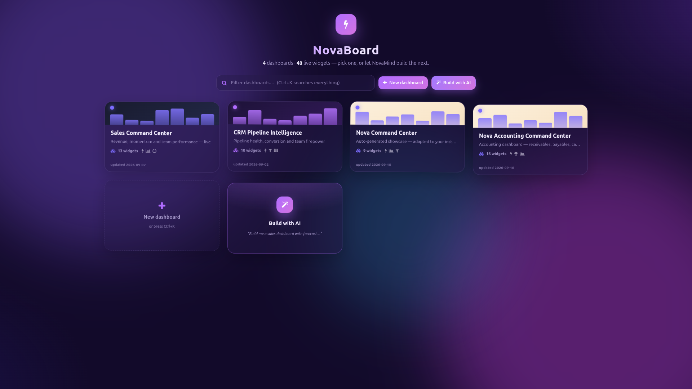
It has a drag-and-resize grid built from scratch, charts drawn with the Chart.js that Odoo already ships, and an analytics engine that forecasts and flags anomalies without calling out to anything. No gridstack, no jQuery, no extra pip packages.
Name it, pick a theme and accent, or let NovaMind draft the whole thing from a one-line brief.
Pick a type, point it at any model, and watch the live preview render against your real data.
Turn on forecasting and anomaly flags, push the board to TV mode, or send it to n8n on a schedule.
KPI cards, area, line and bar charts, leaderboards, funnels, gauges, heatmaps, waterfall and bullet charts, all wired straight to your Odoo data.
Linear-regression forecasts with confidence bands and z-score anomaly detection. No external model, no API call.
Ask it to build a dashboard, add a widget, restyle the theme or answer a data question. Runs offline, or with your own OpenAI-compatible key.
18 date presets, custom ranges, previous-period comparison, gap filling and timezone-correct bucketing, set per widget.
Sales Command Center and CRM Pipeline Intelligence install themselves when the matching apps are present. A Showcase generator covers the rest.
Push KPIs, insights and anomaly digests to a scheduled webhook, with a one-click test before you rely on it.
Aurora, Daylight, Nebula, Carbon and Solar, each with its own accent color, a motion toggle and fullscreen TV mode for wall displays.
Auto menu creation, group-based access, multi-company support, JSON export and import, PNG and CSV export, and drill-down to the underlying records.
See every board you have, how many widgets each one carries, and when it was last touched. Filter with Ctrl+K, start a blank board, or hand the brief to NovaMind and let it build the first draft.
Name it, choose one of five themes and ten accent colors, set the default period and auto-refresh, and turn on previous-period comparison. Add it as a menu item anywhere in Odoo, and link it into a Constellation so related boards appear as quick-switch chips.
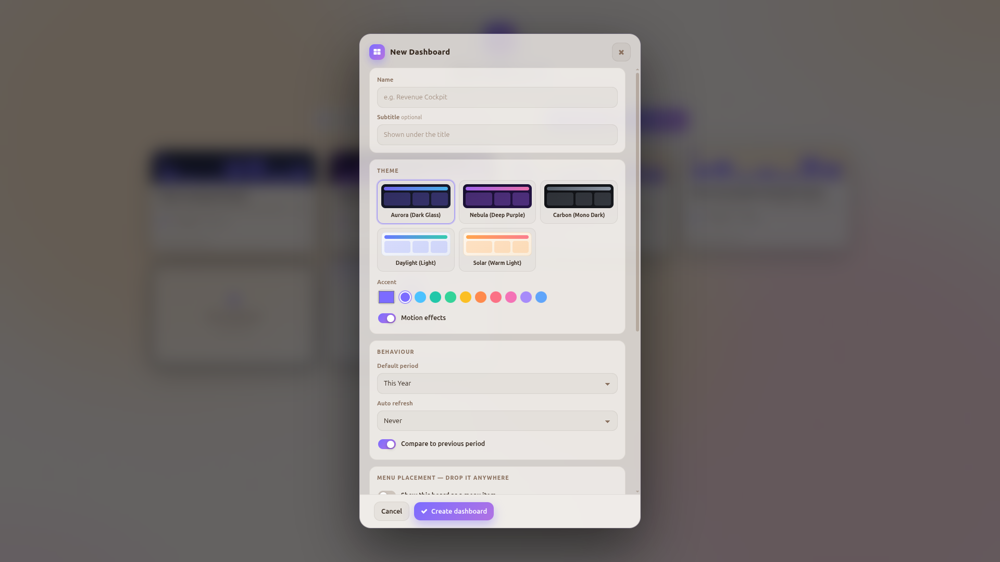
Widget Studio takes you through Data, Style and Intelligence in one panel. Choose from 20 widget types across values, charts, proportions and data groups. The preview renders against your real data before anything touches the board.
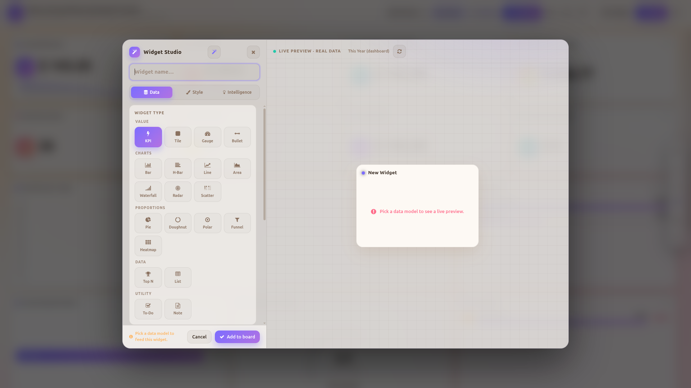
Pick the model, build the filter domain visually or edit it by hand, choose the date field and scope, then set aggregation, group-by, granularity, sub-grouping, sort and limit. They are standard Odoo fields you can inherit, script or query through the ORM.
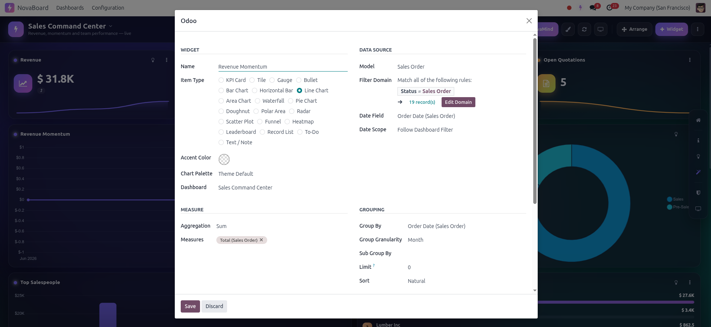
Click a widget to expand it with a stat strip (total, average, peak, point count) and an auto-written insight line on momentum and period-over-period change. Arrow through the other widgets without closing.
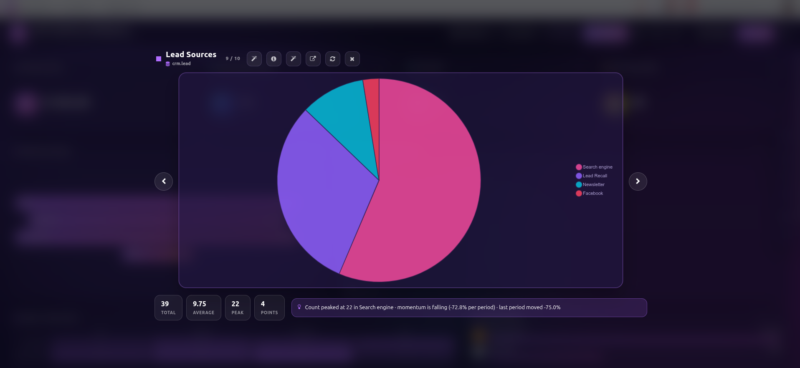
Invoiced revenue, receivables, payables, overdue and draft invoices, cash flow, collections against target, and your top customers and vendors. One screen instead of five reports.
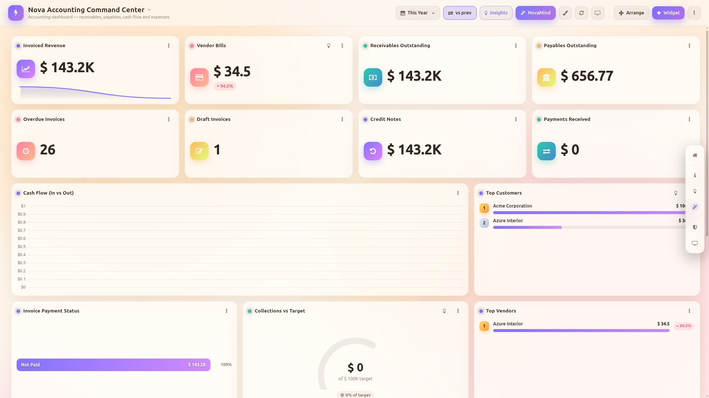
Board Info shows widget and model counts, the mix of widget types, which data sources feed the board, and its theme and refresh setup. Export, settings and TV mode are one click away.
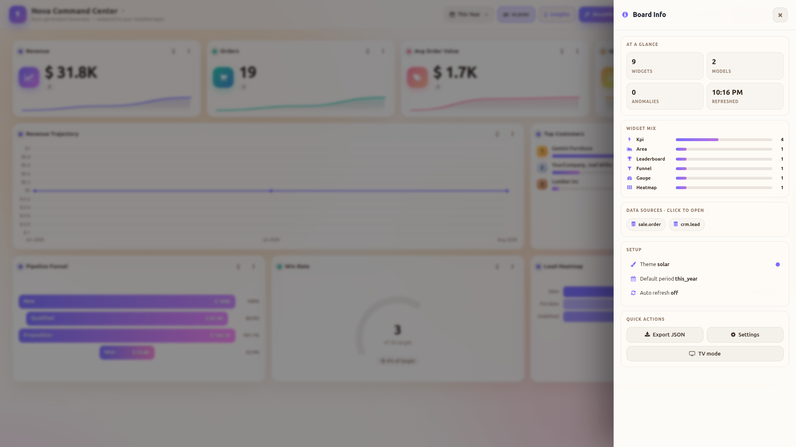
Insight Digest walks the whole board and tells you what moved: which trend is positive, where revenue peaked, who leads, and where conversion is weakest. Ask for a fuller Nova Brief whenever you want one.
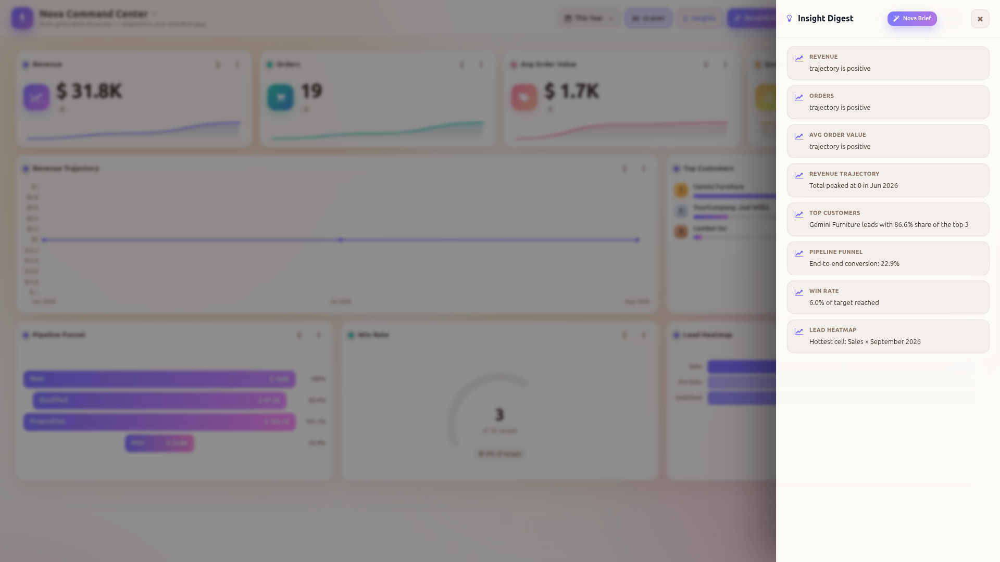
Control Center lists every dashboard and widget, lets you switch NovaMind between the built-in engine and an OpenAI-compatible endpoint, and puts new-dashboard, sample-install and JSON-import shortcuts in one panel.
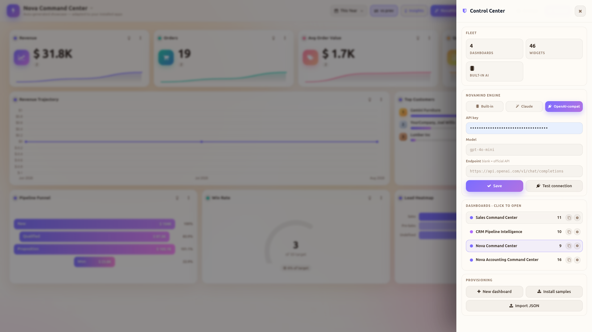
Try "Build a sales dashboard", "Top 10 customers by revenue this year" or "Switch theme to daylight". NovaMind composes whole dashboards, adds or restyles widgets, and answers questions from your live data.
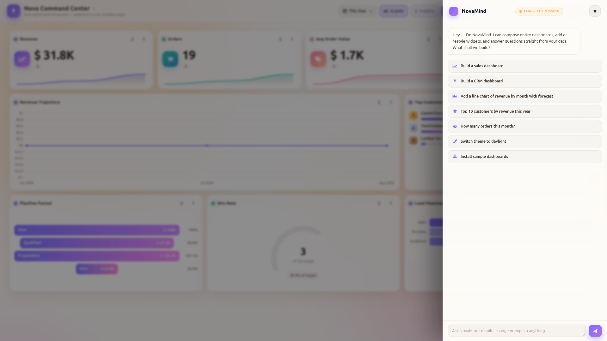
Aurora, Nebula, Carbon, Daylight and Solar, each with its own accent color and an optional motion-effects toggle. Set it per dashboard, not per install.
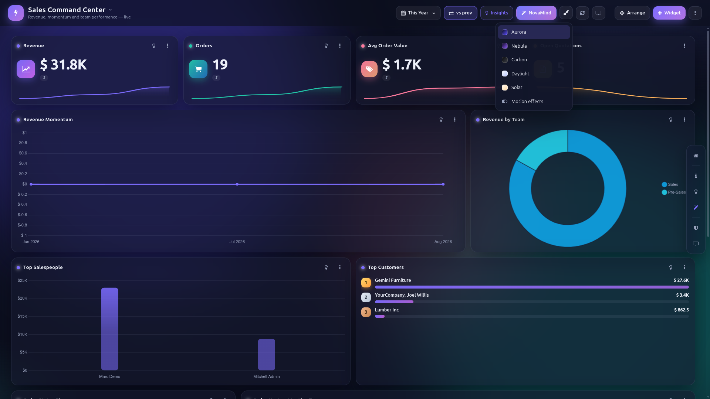
Pipeline value, open opportunities, won deals and new leads sit on top. Below them: a stage-by-stage funnel, expected revenue trend, a stage-by-owner heatmap and your top performers.
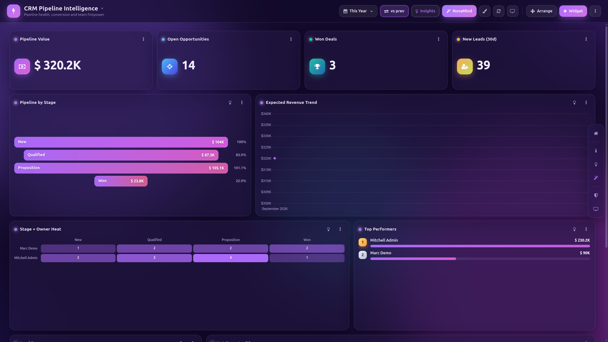
Every widget's Intelligence tab has three switches. Predictive forecasts with a confidence band, as many periods ahead as you set. Vigilance flags anomalies on the chart. Context overlays the previous period. Everything is computed locally and nothing is sent out.
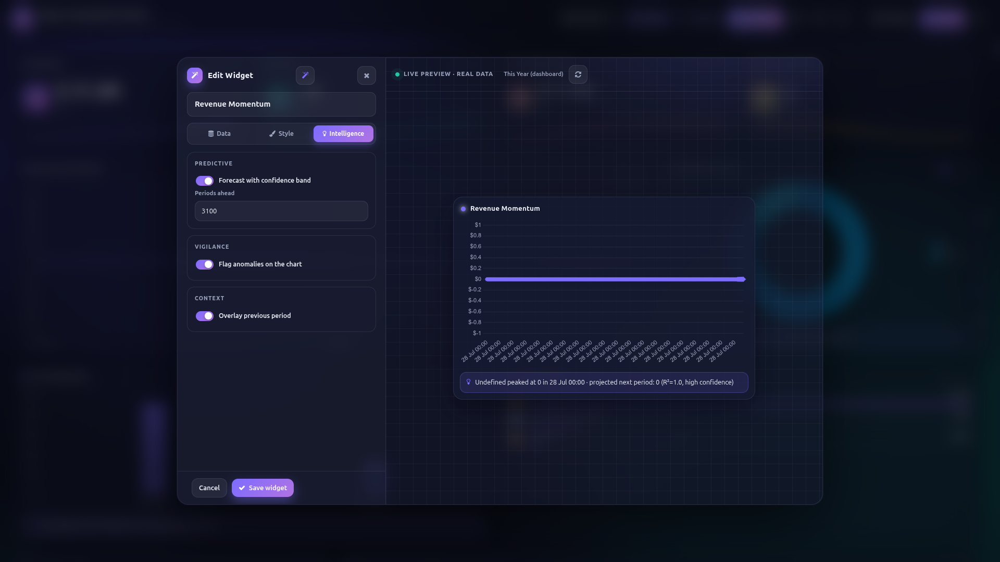
Connect a board to n8n and it sends KPIs, insight digests and anomaly alerts to a webhook on the schedule you choose. Test the connection with one click before you rely on it.
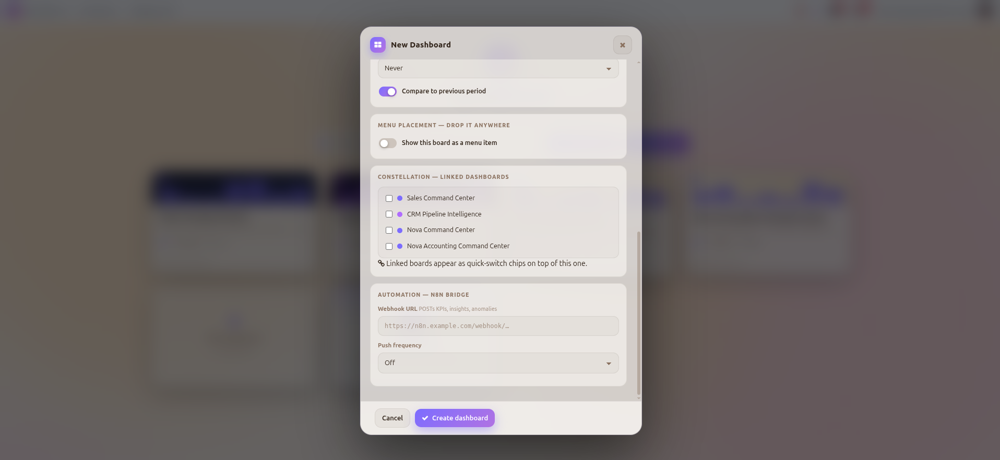
Good-looking or actually useful? NovaBoard forecasts, flags anomalies and explains itself, and still ships with zero external dependencies.
Competitor pricing and features are based on publicly listed Odoo dashboard apps at the time of publishing. Individual apps vary.
Leading Odoo dashboard suites cost $440–$560 and still charge extra for forecasting or AI. NovaBoard includes both, for less than half the price.
Free minor updates included. Major version upgrades and priority support are available separately.
Yes. Every widget reads live from the underlying Odoo model, with an optional auto-refresh interval per dashboard.
No. The built-in offline engine handles dashboard building, restyling and Q&A out of the box. To use your own account, add an OpenAI-compatible key and endpoint in System Parameters and NovaMind switches over.
No. Forecasting and anomaly detection run on built-in logic, so NovaBoard installs on any Odoo 18 instance without extra pip packages.
Yes. Export it to JSON from Board Info or Control Center, then import it on the target database.
Email abdogabr354@gmail.com or raise a ticket through the Odoo Apps store.
Questions about dashboards, widgets or connecting your own LLM? Reach out directly.
Contact the makerNovaBoard · Author: Abdulfattah (AM)